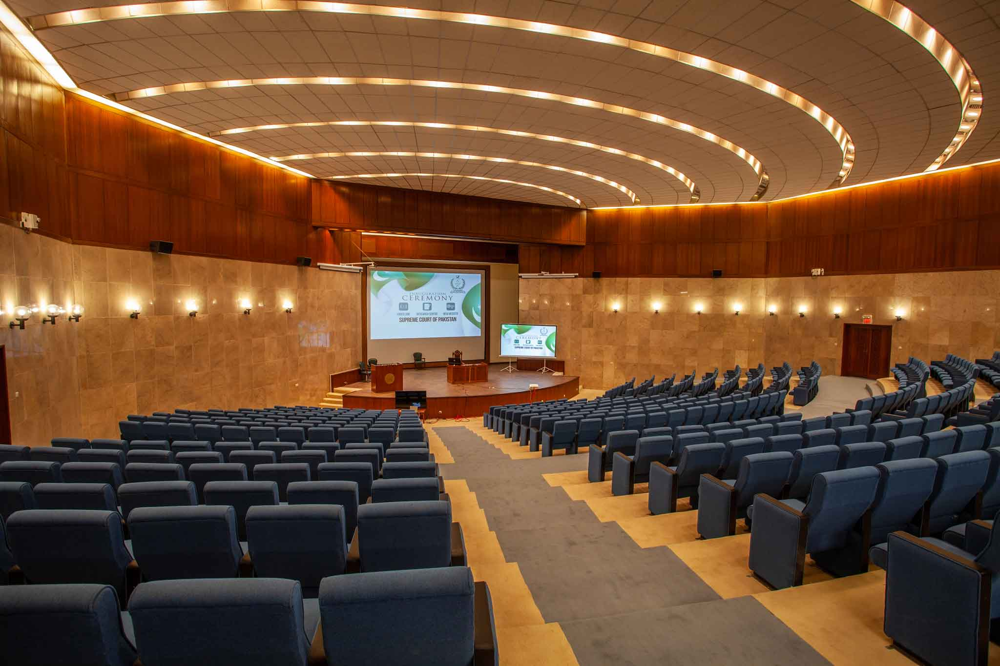
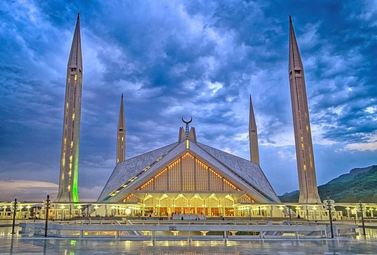

The Capital of Pakistan :
Islamabad, city, capital of Pakistan, on the Potwar Plateau, 9 miles (14 km) northeast of Rawalpindi, the former interim capital. The city’s site was chosen by a commission in 1959 after Karachi was found unsuitable as the capital. Construction began in 1961 with an effort to blend traditional Islamic architecture with modern patterns and requirements. Such world-renowned names in town planning and architecture as Konstantínos Doxiádes, Edward Durell Stone, and Gio Ponti have been associated with the city’s development. It is a compact city (area 25 square miles [65 square km]), lying at elevations ranging from 1,500 to 2,000 feet (450 to 600 metres). The second phase of construction ended with completion of the Secretariat, Pakistan House, President’s House, National Assembly Building, Grand National Mosque, and housing for government staff. The University of Islamabad was established in 1965 and the People’s Open University (later renamed the Allama Iqbal Open University) in 1974. The war with India in 1971 slowed construction temporarily.

The urban area is divided into eight zones: administrative, diplomatic, residential, institutional, industrial, and commercial areas, a greenbelt, and a national park. It includes an Olympic village and gardens and dairy, poultry, and vegetable farms, as well as such institutions as the Atomic Research Institute and the National Health Centre. The name Islamabad (“City of Islam,” or “City of Peace”) was chosen to reflect the country’s ideology.
The planned capital area of 350 square miles (906 square km) is an expanse of natural terraces and meadows surrounding the city. A further 1,400 square miles (3,626 square km) of hinterland, known as the Specified Areas, is subject to planning control, with the Margala Hills, 3,000 to 5,000 feet (900 to 1,500 metres) high, in the north and northeast. The southern portion is an undulating plain. It is drained by the Kurang River, on which the Rawal Dam forms a lake holding about 50,000 acre-feet (61,650,000 cubic metres) of water. Pop. (2017) city, 1,009,832; capital area, 2,001,579.

Islamabad, the capital city of Pakistan, has been ranked second in the list of world's most beautiful capitals followed by Paris, Washington, Berlin and Tokyo. London remained at the top of the list that included ten most beautiful capitals of the world. Russian capital, Moscow, remained at the bottom of the list.15-May-2015
Islamabad is the world's second most beautiful capital, designed uniquely and made eco-friendly. This city has a lot to offer, an eye-catching view, a peaceful environment, developed infrastructure, clean roads, and super cool people.
Made with By Mr.Haris
Leave a Comment